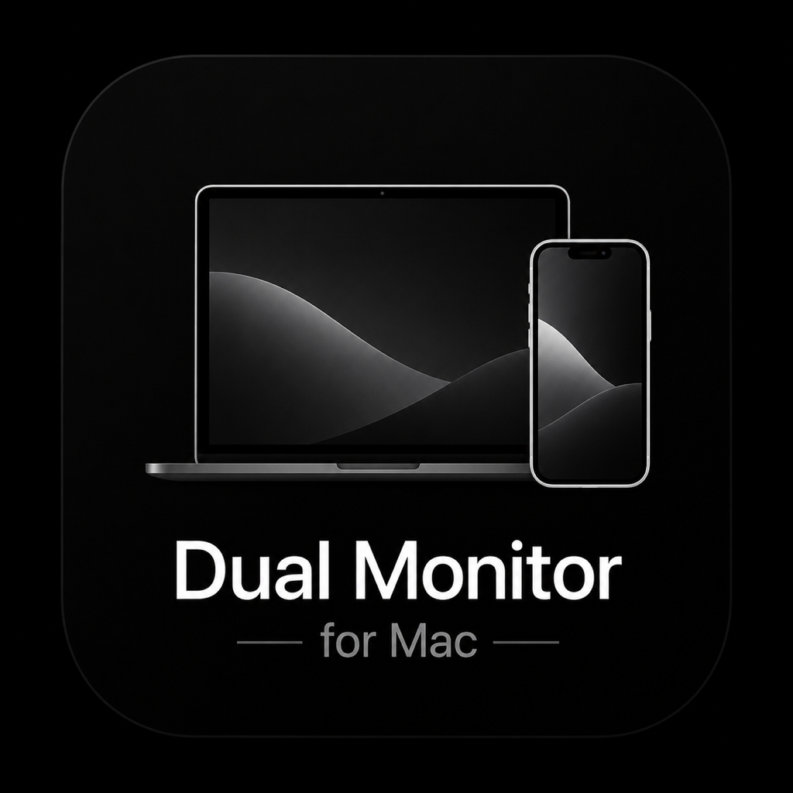

Turn your iPhone or iPad into an ultra-low latency, 120 FPS secondary display for your Mac. Connect via USB or Wi-Fi instantly.
Connect via a standard USB cable for unparalleled responsiveness and true 0-lag hardware decoding.
Experience ultra-smooth 120 frames per second rendering and crystal clear 4K resolutions on supported devices.
All data stays purely on your local network. No external servers, no cloud streaming, 100% private.